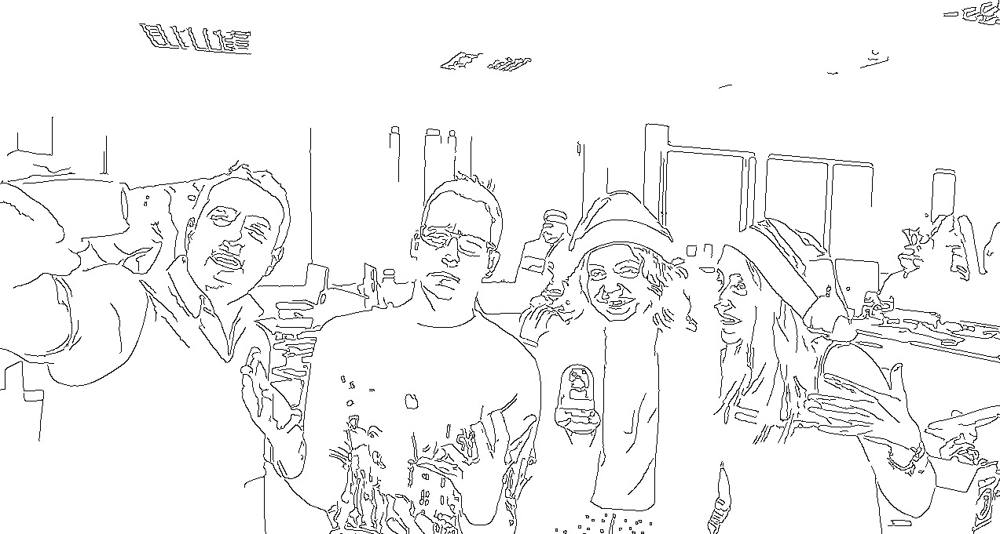
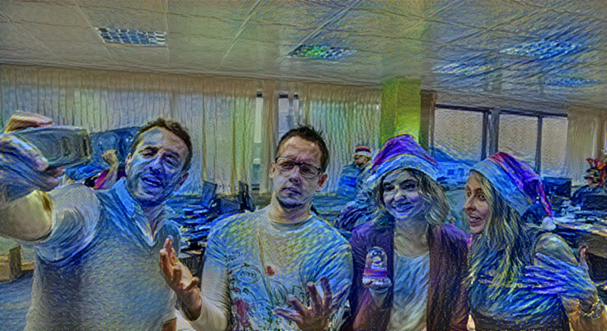

<div id="filtersStyle">

  <p style="text-align:center">
    <label class="radio-inline"><input type="radio" ng-model="filter" value="color">
      Resaltar rojo</label>
    <label class="radio-inline"><input type="radio" ng-model="filter" value="border">
      Detección de bordes</label>
    <label class="radio-inline"><input type="radio" ng-model="filter" value="face">
      Detección de caras</label>
    <label class="radio-inline"><input type="radio" ng-model="filter" value="art">
      Estilo artístico</label>
  </p>

  <div ng-switch="filter">

    <div  ng-switch-when="color">
      
    </div>

    <div  ng-switch-when="border">
      
    </div>

    <div  ng-switch-when="face">
      
    </div>

    <div  ng-switch-when="art">
      
    </div>

  </div>

</div>
